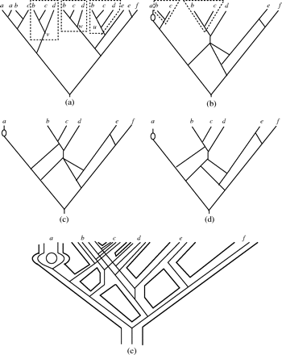

Constructing network from multilabeled tree
Qian Feng
2018-01-05
Last updated: 2018-01-05
Code version: 582bc0b
Polyploid species played a major role in the evolution of plants. In this paper, we focus on present all possible phylogenetic networks from a multilabeled tree that are guaranteed to have minimal number of interaction nodes.
 Figure 2 from original paper
Figure 2 from original paper
Based on Fig.2 in this paper, we can see (b)(c)(d) are all phylogenetic networks that exhibit (a), however, we will use efficient algorithm to draw a phylogenetic network like (d) rather than (b) and (c).
From Fig.3 in this paper, we can see subtrees \(T_{(u)}\),\(T_{(v)}\) and \(T_{(w)}\) are maximal inextendible. Fours useful concepts are subtree, equivalent, inextendible and maximal inextendible. In fact, we will focus on how to find maximal inextendible subtrees from a given MUL tree in actual algorithm. Note that the definition of inextendible is not clear for me, so I borrowed another one in the paper of Huber KT and Moulton to get a better understanding this terminology.
inextendible: suppose \(T\) is MUL tree, for every vertex \(v \in V(T)\) that is not the root of T we denote the parent of \(v\) by \(\bar v\), suppose \(T'\) is a sub MUL tree with vertex \(v\), we say \(T'\) is inextendible if there existed another sub MUL tree \(T''\) with root vertex \(w\) so that \(T''\) is isomorphic to \(T'\), and \(T(\bar v)\) is not isomorphic to \(T(\bar w)\).
 Figure 3 from original paper
So there would be a contradiction in the statement of inextendible definition. Take a look at Fig.3 again, whether on earth each subtree having leaves labeled with b and c is inextendible or not ?
The core of this algorithm showed in Fig.4 is to merge and prune maximal inextendible subtrees and its equivalent subtrees, this process is repeated until a network is obtained that contains no repeated labeled leaves.Unfortunately, I could understand how do they find the maximal inextendible subtrees by height list \(H\) and code \(c(v)\) in the initial step.
A noticeable limitation is when MUL tree contains polytomies showed in Fig.6,using this presented constructing methods would lead to several different phylogenetic networks.
This R Markdown site was created with workflowr